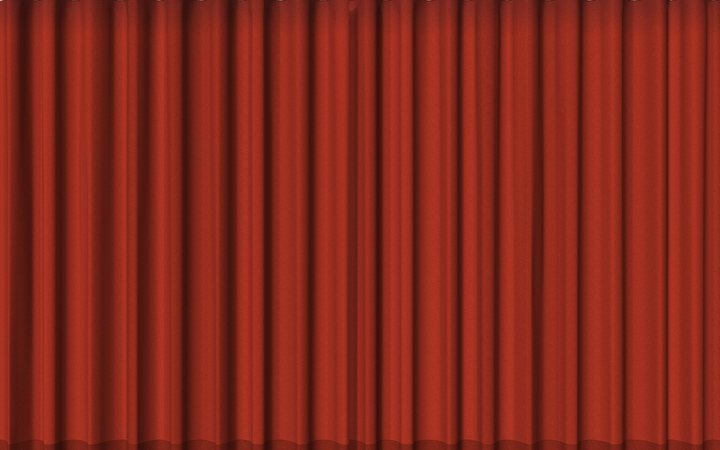
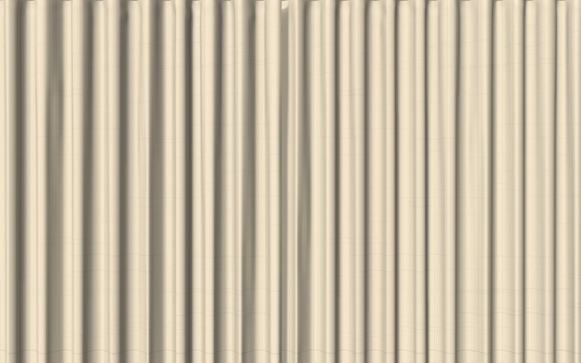
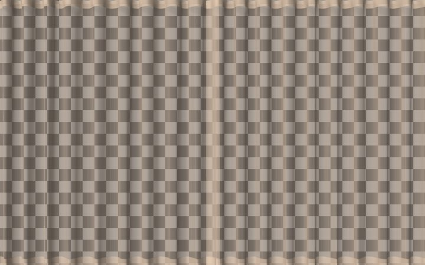
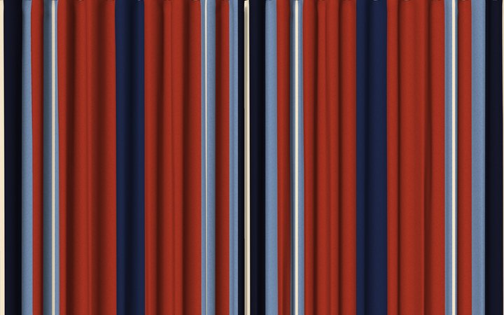
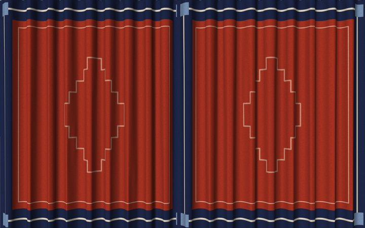
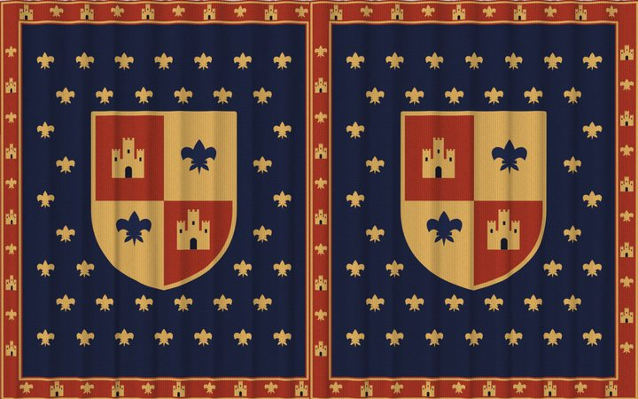

Jetzt siehst du’s. Jetzt nicht mehr.
Er verhält sich wie Stoff

Falten und einrollen
Pack eine beliebige Stelle und zieh, um sie anzuheben, zu falten oder einzurollen. Zieh eine Falte zurück, um sie aufzuheben, oder doppelklicke, um alles zu glätten.

Legt sich über deine Symbole
Jedes Schreibtischsymbol wirft eine Beule unter dem Teppich. Stapel von Symbolen ergeben größere Beulen.

Gestalte deinen eigenen
Perser, Heris, Kelim, Berber, gestreift, mit Bordüre, als Hochflor, als Strandtuch oder als Fußmatte – mit Farben, Fransen, Abnutzung und Florhöhe nach deiner Wahl.

Mehrere Teppiche stapeln
Teppiche liegen aufeinander, und der, den du bewegst, gleitet nach oben.

Auch Vorhänge
Häng Vorhänge an die Menüleiste. Schieb sie daran entlang, zieh sie auf oder zu, lass sie schwingen: Sie fallen zurück in ihre Falten. Samt, Leinen, Voile, Streifen, mit Bordüre, Wandteppich oder dein eigenes Bild.

Mehrere Anordnungen
Leg dir für jede Stimmung Teppiche oder Vorhänge zurecht, eine Anordnung für die Arbeit, eine fürs Wochenende, und wechsle mit einem Klick in der Menüleiste.
Stoffgeräusche. Ein weiches, gedämpftes Wollrascheln, während er sich bewegt, und ein sanftes Plumpsen, wenn eine Falte landet. Mit einem Klick abschaltbar.
Schont deinen Mac. Ein ruhender Teppich braucht kaum CPU. Kein Lüfter, kein leerer Akku, obwohl er den ganzen Tag auf deinem Schreibtisch liegt.
Tapis unterstützen
Tapis ist kostenlos. Wenn es deinen Schreibtisch ein bisschen gemütlicher gemacht hat, kannst du mir auf Ko-fi einen Kaffee spendieren oder es auf GitHub sponsern.
So funktioniert’s
Alles geschieht mit der Maus auf dem Teppich.
Falte ihn
Pack eine beliebige Stelle des Teppichs und zieh, um ihn anzuheben, zu falten oder einzurollen. Falten bleiben, wo du sie lässt.
Zieh eine Falte zurück, um sie aufzuheben. Ein Doppelklick glättet den ganzen Teppich.
Gedrückt halten zum Bearbeiten
Halte einen Teppich eine halbe Sekunde lang gedrückt: Er ist ausgewählt und faltet sich nicht, während du ihn bearbeitest.
Zieh, um ihn zu verschieben, zieh an einer Ecke, um die Größe zu ändern, zieh am oberen Knopf, um ihn zu drehen (halte ⇧ gedrückt für 15°-Schritte). Klick ihn erneut oder irgendwo anders an, wenn du fertig bist.
Mach ihn zu deinem
Unter einem ausgewählten Teppich erscheint eine kleine Werkzeugleiste. Gestalten öffnet Muster, Farben, Fransen, Abnutzung und Florhöhe.
Über die Werkzeugleiste kannst du ihn auch um 90° drehen, glätten oder entfernen.
Schieb ihn unter deine Symbole
Standardmäßig liegt ein Teppich über deinen Schreibtischsymbolen, die darunter Beulen werfen. Er kann aber auch unter ihnen liegen, wie eine Unterlage für deine Dateien.
Wähle in der Werkzeugleiste Unter die Symbole legen. Um ihn wieder zu erreichen, wähle Teppiche anordnen im Menü.
Weitere Teppiche hinzufügen
Wähle Teppich hinzufügen im Menü (⌘N). Teppiche stapeln sich, und der, den du bewegst, gleitet nach oben.
Deaktiviere Teppiche einblenden, um den Schreibtisch kurz freizuräumen.
Vorhänge aufhängen
Wähle Vorhänge im Menü: Ein Vorhang hängt von der Menüleiste. Zieh ihn seitwärts, um ihn entlangzuschieben, und gegen einen anderen, um diesen wegzuschieben.
⌘-Doppelklick zieht ihn auf oder zu, ein Doppelklick glättet ihn. Halte ihn gedrückt, um seine Größe an den seitlichen Griffen zu ändern. Vorhang hinzufügen hängt einen weiteren auf.
Anordnungen wechseln
Eine Anordnung ist ein Satz Teppiche oder Vorhänge. Leg dir eine für die Arbeit und eine fürs Wochenende an und wechsle mit einem Klick im Menü.
Anordnungen verwalten … erstellt, dupliziert, benennt und löscht sie. Alles wird automatisch gesichert.
Wähl ein Muster


Wähl einen Vorhangstoff






Installieren
Kostenlos. Erfordert macOS 14 oder neuer auf einem Mac mit Apple Chip.
Laden
Hol dir das neueste DMG auf der Seite Releases.
In „Programme“ ziehen
Öffne das DMG und zieh Tapis in deinen Ordner „Programme“.
Starten
Öffne Tapis aus dem Ordner „Programme“. Sein Symbol erscheint in der Menüleiste.
Immer aktuell
Tapis sagt dir, wenn eine neue Version erscheint, und bietet dir das Update an.
Datenschutz von Anfang an
Kein Account. Keine Analysedaten. Die einzige Netzwerkverbindung ist die Suche nach Updates, und dabei wird nichts über dich gesendet. Ob du aktualisierst, entscheidest immer du. Tapis läuft vollständig auf deinem Mac, und deine Teppiche und Vorhänge verlassen ihn nie.
Auf deinem Mac gesichert
Deine Teppiche, Vorhänge, Designs und Anordnungen werden nur auf deinem Mac gespeichert. Nichts wird synchronisiert oder hochgeladen.
Dein Schreibtisch bleibt deiner
Tapis fragt den Finder, wo deine Symbole liegen, nur damit sich der Teppich über sie legen kann. Diese Information verlässt deinen Mac nie.
Nur eine Abfrage, für Updates
Um zu prüfen, ob es eine neue Version gibt, liest Tapis eine öffentliche Liste auf GitHub. Dabei wird nichts über dich oder deinen Mac gesendet.
Inspiration
Tapis ist inspiriert von einem Tweet von Terkel. So eine witzige Idee, und es hat genauso viel Spaß gemacht, sie umzusetzen.